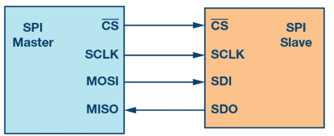

Introduction to SPI interface¶
Serial peripheral interface (SPI) is one of the most widely used interfaces between microcontroller and peripheral integraded circuits (ICs) such as:
Sensors
ADCs
DACs
Shift registers
SRAM
SPI is a synchronous, full duplex master slave based interface. The data from the master or the salve is syncrhonized on the rising of falling clack edge. Both master and slave can transmit data at the same time. The SPI interface can be in two forms:
3-wire
4-wire
Tis documentation focuses on the popular 4-wire SPI interface, as shown in the Figure 1.
Figure 1. SPI interface.
4-wire SPI devices have four signals:
clock (SPI CLKC, SCLK)
Chip select (~CS)
Master out, slave in (MOSI)
Master int, salve out (MISO)
The device that generates the clock signal is called the mater. Data transmitted between the master and the sale is syncrhonized to the clock generated by the master. SPI devices support much higher clock frequencies compared to I2C inerfaces. Users should consult the product data sheet for the clock frequency specification of the SPI interface.
SPI interaces can have only one master and can hace one or multiple salves. Figure 1 shows the SPI conenction between the master and the slave.
The chip select signal from the master is used to select the slave. This is normally an active low signal and is pulled high to disconnect the slave from the SPI bus. When multiple slaves are used, an individual chip select the signal for each slave is requiered from the master.
MOSI and MISO are data lines. MOSI transmits data from the master to the slave and MISO transmits data from the slave to the master.
Data transmission¶
To begin SPI communication, the muster must send the clock signal and select the slave by enabling the CS signal. Usually chip select is an active low signal; hence, the master must send a logic 0 on theis signal to select th slave. SPI is a full-duplex interface; both master and slave can send data at the same time via the MOSI and MISO lines respectively.
During SPI communication, the data is simultaneously transmitted and received. The serial clock edge synchronizes the shifting and sampling of data. The SPI interface provides the user with flexibility to select the rising or falling edge of the clock to sample and/or shift the data.